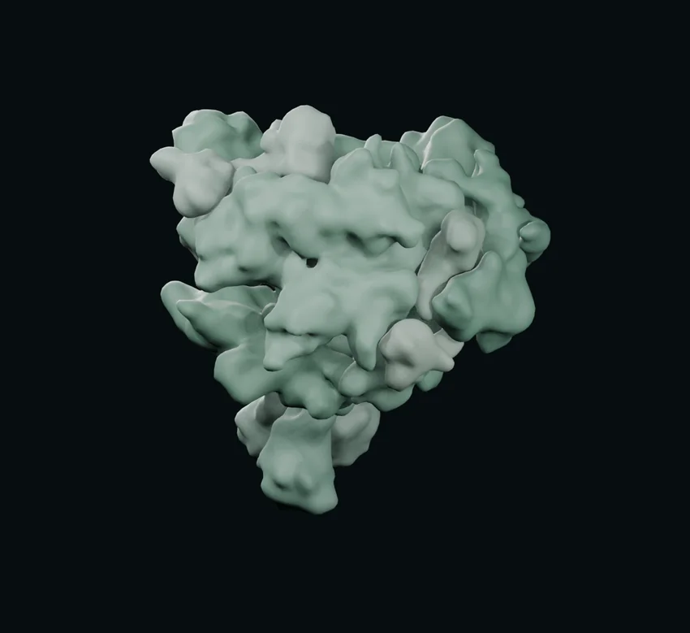

转录 · 延长阶段
转录近景14 秒动作样段
看核苷酸如何对位，接入不断延伸的 RNA。
DNA → RNA
正在准备三维场景…
聚合酶模型资源载入失败，播放控制已停用。请稍后刷新重试。
观察局部 DNA 与聚合酶
聚合酶 · 实验结构简化查看旧形体对照
模型说明
镜头引导会慢放并跟随工作区；固定对照沿用原镜头与原节奏。两种模式使用相同模型和材质。拖动或滚轮会接管镜头，可点“继续镜头引导”接回导览。画面的弹性和颜色用于教学示意，不代表真实分子运动速度；回拖用于教学回看，不表示反应逆向发生。
沿用 2019 人教必修 2 图 4-4 的教学转录关系。只有聚合酶的蛋白质轮廓由实验坐标生成：来源为酿酒酵母 RNA 聚合酶 II 延长复合物（PDB 1Y1W · 4.00 Å）。当前使用未剖切的简化曲面；开启“透视”后，工作区靠近观众的表面局部淡出，随视角调整，外围保留实体质感。关闭透视可以观察完整外形。这是教学观察方式，不表示真实聚合酶透明。
它代表这一种聚合酶及其已测得的部分，不是所有聚合酶的统一外形，也不是原子级精确表面。DNA、RNA 沿用教材示意序列、路径和放大比例，没有采用该实验的核酸坐标。颜色、光泽和慢放属于教学表现，十二个亚基保持静态。
“上一版对照”使用原绿色材质和固定剖切。两版镜头、时间点和配对过程相同；当前版同时更新表面材质与观察方式。拖动视角后切换版本，会恢复该时间点的预设镜头。
